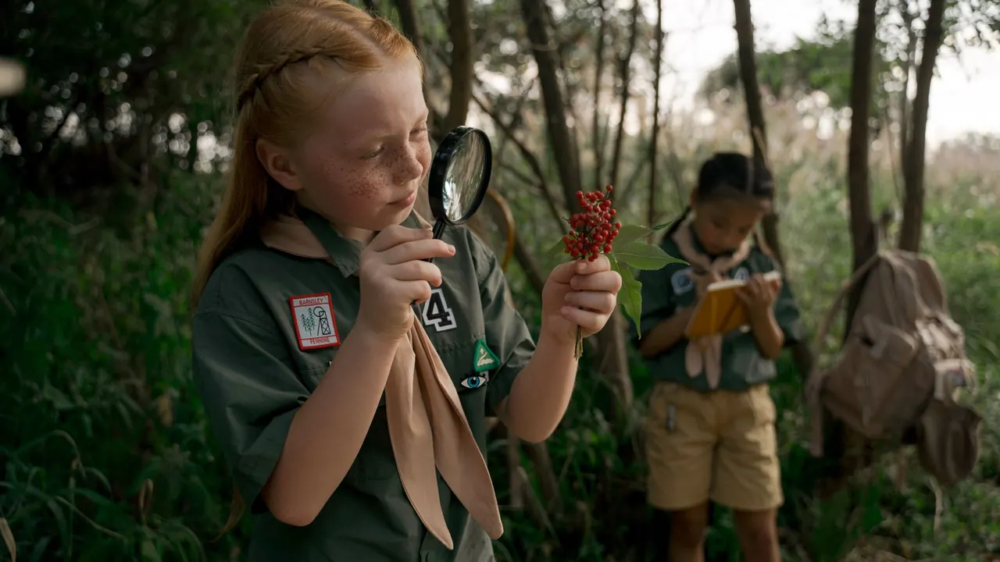
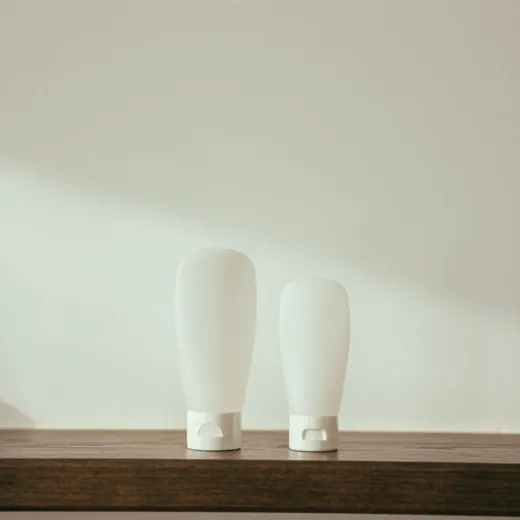
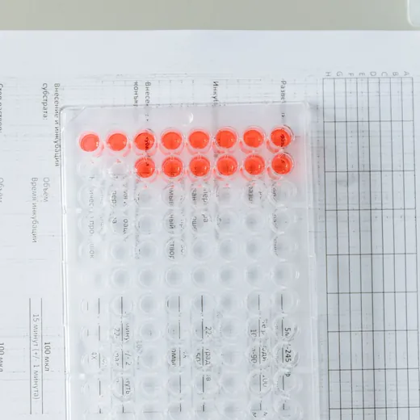
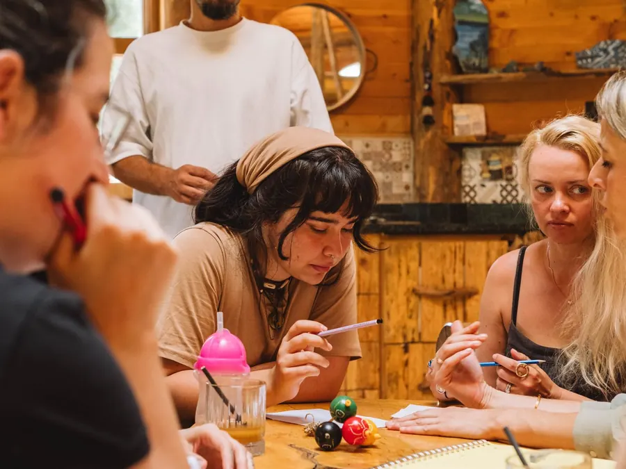
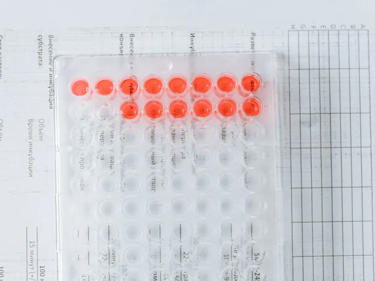
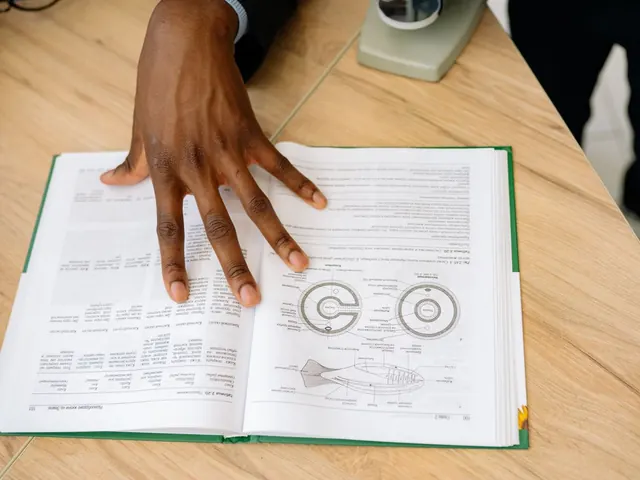
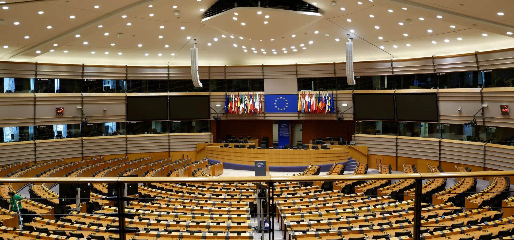
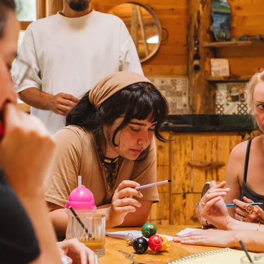

Bleu profond
--blue
Couleur d'action : bouton principal, sur-titres, contour de focus, filets d'accent, coches, départ des dégradés bleus.
Couleurs, typographies, boutons, composants, icônes et images de la maquette PEPPER. Tout est rendu par la feuille de style du site : ce qui s'affiche ici est exactement ce qu'affiche la maquette.
Les codes couleur, les rapports de contraste et les tailles sont lus dans css/site.css à l'ouverture de la page : modifiez une variable, rechargez, la charte suit. Cliquez sur un code couleur pour le copier.
Cinq teintes relevées sur la planche d'inspiration du client, puis des nuances dérivées pour le texte, les fonds et les états.
Valeurs échantillonnées dans les pavés vectoriels de « Inspiration Pepper.pdf ».
--blue
Couleur d'action : bouton principal, sur-titres, contour de focus, filets d'accent, coches, départ des dégradés bleus.
--bright
Accents sur fond sombre : italiques des titres, numéros de chapitre, intitulés d'étapes, repère actif. Fond de la pastille « En cours ».
--sand-strong
Fond de la pastille « En préparation ». Sa version claire, --sand, colore les fonds de section.
--line
Filets et bordures : cartes, listes, en-tête, séparateurs, champ e-mail, filtres.
--grey
Non utiliséPrésent dans la palette du client et déclaré dans la feuille de style, mais employé nulle part dans la maquette.
Le fond de page est un blanc froid tiré des gris ; l'encre bleu nuit est tirée du bleu profond.
--ink
Texte principal et titres. Fonds sombres : bandeau, méga-menu, pied de page, langue et filtres actifs.
--ink-2
Texte de lecture : chapeau du héros, descriptions d'étapes, texte long, listes des offres, encadré.
--muted
Liens du menu, chapeaux, descriptions de cartes, métadonnées, sur-titres neutres.
--blue-d
Survol du bouton principal, numéros d'étapes, noms de projets, texte des pastilles, fin du dégradé des chiffres clés.
--blue-l
Pastille « Terminé », fond des icônes de ressources et survol des lignes de ressources.
--blue-pale
Fond des sections « Comment nous travaillons » et « Nos réalisations ».
--sand
Fond des sections « Publics » et « Lettre d'information », de l'encadré, survol du bouton blanc.
--paper
Fond général et en-tête (à 88 % d'opacité, avec flou d'arrière-plan).
--white
Cartes, listes, filtres, champ e-mail, sélecteur de langue, survol des lignes de liste. Texte sur fond sombre.
Utilisés pour le texte et les filets posés sur l'encre, le bleu ou les photos assombries.
--on-dark
Liens du pied de page, textes des étapes d'adhésion, légende de la vidéo.
--on-dark-soft
Notes et descriptions secondaires. 68 % est le minimum qui tient le contraste AA sur le bleu profond.
--rule-dark
Séparateurs des chiffres clés, des étapes d'adhésion, du méga-menu et du pied de page.
Employées par la maquette mais sans variable dans :root. À transformer en variables si elles entrent dans la charte.
.c-prep
Texte de la pastille « En préparation », sur le sable.
.joinblock
Fin du dégradé de la scène « Nous rejoindre ».
.nlform input::placeholder
Texte indicatif du champ e-mail. Contraste trop faible pour du texte courant (voir plus bas).
.vmodal::backdrop
Fond qui recouvre la page quand la vidéo s'ouvre.
Rendus ici par les vraies classes du site, en format réduit. Aucun voile ne teinte les photographies : ils éclaircissent ou assombrissent seulement, pour la lisibilité du texte.
 Mieux détecter les perturbateurs endocriniens.
Mieux détecter les perturbateurs endocriniens.

Identifier un perturbateur endocrinien.--blue en haut à --blue-d en bas.--blue à #00315C.Toutes les paires réellement employées, avec leur rapport de contraste calculé. Seuil WCAG AA : 4,5 pour le texte courant, 3 pour les grands textes (24 px, ou 19 px en gras).
| Exemple | Texte | Fond | Rapport | Niveau | Où |
|---|---|---|---|---|---|
| Texte courant | --ink | --paper | — | — | Corps de texte et titres |
| Texte courant | --ink-2 | --paper | — | — | Chapeau du héros, étapes, texte long |
| Texte courant | --muted | --paper | — | — | Chapeaux, liens du menu, sur-titres neutres |
| Texte courant | --muted | --white | — | — | Descriptions des cartes et des ressources |
| Texte courant | --muted | --sand | — | — | Lettre d'information, publics |
| Texte courant | --muted | --blue-pale | — | — | Descriptions de la liste des projets |
| Texte courant | --blue | --paper | — | — | Sur-titres, incises du héros |
| Texte courant | --blue-d | --blue-pale | — | — | Numéros d'étapes, noms de projets |
| Texte courant | --white | --blue | — | — | Bouton principal |
| Texte courant | --white | --blue-d | — | — | Bouton principal au survol |
| Texte courant | --white | --ink | — | — | Bouton secondaire au survol, filtres actifs, bandeau |
| Texte courant | --ink | --white | — | — | Bouton blanc, cartes |
| Texte courant | --blue-d | --bright | — | — | Pastille « En cours » |
| Texte courant | #63410E | --sand-strong | — | — | Pastille « En préparation » |
| Texte courant | --blue-d | --blue-l | — | — | Pastille « Terminé » |
| Texte courant | --bright | --blue | — | — | Accents des chiffres clés et de l'adhésion |
| Texte courant | --on-dark | --ink | — | — | Liens du pied de page |
| Texte courant | --on-dark-soft | --ink | — | — | Descriptions du méga-menu, mentions du pied de page |
| Texte courant | --on-dark | --blue | — | — | Textes des étapes d'adhésion |
| Texte courant | --on-dark-soft | --blue | — | — | Textes des chiffres clés (cas le plus juste) |
| Texte courant | #8A90A6 | --white | — | — | Texte indicatif du champ e-mail |
Instrument Sans porte l'interface et la lecture ; Instrument Serif est réservée aux incises italiques et aux grands chiffres. Les deux sont libres (licence SIL Open Font) et servies par Google Fonts.
400500600700
ABCDEFGHIJKLMNOPQRSTUVWXYZ abcdefghijklmnopqrstuvwxyz 0123456789 éèêàçôœ « » : ; ! ?
Variable de 400 à 700. Titres (500), titres de bloc et boutons (600), corps (400).
RomainItalique
ABCDEFGHIJKLMNOPQRSTUVWXYZ abcdefghijklmnopqrstuvwxyz 0123456789
Une seule graisse. Italique pour les incises des titres ; romain pour les grands chiffres, les citations, les numéros et les dates.
PPARγ
Γ Δ Ω α β γ δ κ λ μ σ ω
Micro-sous-ensemble chargé uniquement pour le γ de PPARγ, absent d'Instrument Sans.
Toutes les tailles sont fluides : elles grandissent avec la largeur de l'écran, de 375 px (mobile) à 1440 px (grand écran), et suivent le zoom du navigateur. La ligne bleue donne la taille rendue dans votre fenêtre.
Mieux détecter les perturbateurs endocriniens. Avec des méthodes d'essai validées.
Détecter pour mieux protéger
PEPPER accélère la production d'essais validés en Europe.
Valider une méthode est un travail long, coûteux et nécessairement collectif. Il faut un protocole stabilisé, plusieurs laboratoires indépendants, des essais répétés puis comparés entre eux.
Des laboratoires partenaires appliquent le même protocole et confrontent leurs résultats afin d'établir la reproductibilité et la robustesse de la méthode.
2021
Être le lien opérationnel entre la recherche amont et ses applications concrètes.
| Élément | Classe | Réglages |
|---|---|---|
| Titre d'étape | .step h3 | 21,5 → 34 px · graisse 600 · approche −0,02 em |
| Nom de projet | .pname | 24 → 40 px · graisse 600 · interligne 1,05 · bleu foncé |
| Numéro d'étape | .step .num | Instrument Serif · 24 → 40 px · bleu foncé · chiffres alignés |
| Numéro de public | .audience-band .aud div::before | Instrument Serif · 24 px · bleu profond |
| Date d'actualité | .newsrow time | Instrument Serif · 22 px · encre |
| Bouton | .btn | 15 px · graisse 600 · approche 0,005 em (14 px dans le héros) |
| Lien du menu | nav a | 15 px · graisse 500 · texte atténué (18 px dans le menu mobile) |
| Bandeau de démonstration | .ribbon | 12,5 px · graisse 500 · capitales · approche 0,06 em |
| Titres du pied de page | footer h4 | 13 px · graisse 600 · capitales · approche 0,11 em |
| Légende photo | .credit | 12 px · capitales · approche 0,06 em · blanc à 50 % |
Survolez-les pour voir leur état de survol ; parcourez la page avec la touche Tab pour voir le contour de focus.
Communs aux quatre : rayon 999 px, hauteur minimale 44 px (cible tactile), marges 13 × 24 px, texte 15 px en graisse 600, transition 0,2 s, focus clavier en contour bleu profond de 3 px décalé de 3 px.
| Bouton | Fond | Texte | Bordure | Survol | Usage |
|---|---|---|---|---|---|
Principal .btn-p |
bleu profond | blanc | aucune | fond bleu foncé | Action principale : « Nous rejoindre », « Découvrir les projets », « S'inscrire » |
Secondaire .btn-g |
transparent | encre | 1 px encre | fond encre, texte blanc | Action secondaire sur fond clair : « Pourquoi PEPPER existe », « Tous les projets » |
Contour blanc .btn-w |
transparent | blanc | 1 px blanc à 45 % | fond blanc, texte encre | Sur fond sombre : étapes d'adhésion, fermeture de la vidéo |
Plein blanc .btn-solid |
blanc | encre | aucune | fond sable clair | Action finale sur fond sombre : « Devenir membre » |
Menu, langue, filtres, flèches de scène et champ e-mail. Les filtres et la langue basculent au clic.
Menu principal nav .navlink
15 px graisse 500, texte atténué ; encre au survol. Page courante soulignée de 2 px bleu profond. Sur mobile, « Explorer » cède la place à des liens directs.
Langue .lang
Pilule blanche bordée de gris filet ; langue active sur fond encre. 12,5 px graisse 600.
Filtres .filters
Pilules blanches, texte atténué 14 px ; bordure et texte encre au survol ; actif sur fond encre. Hauteur 40 px.
Champ e-mail .nlform
Pilule blanche bordée de gris filet, 14,5 px, accolée au bouton principal.
Flèche de scène, fond clair .scrollcue.flow
Flèche de scène, fond sombre
Suivre l'avancementFlèche : cercle de 44 px au filet de 1 px, flèche qui oscille en 2,4 s, libellé de 12 px en capitales espacées de 0,12 em. Elle relie chaque scène de l'accueil à la suivante.
Chaque bloc est celui de la maquette, avec ses vraies classes. Le bandeau de démonstration, l'en-tête et le pied de page sont visibles en haut et en bas de cette page.
.chip .c-run · .c-prep · .c-done.chap · .tag · .mv .k · .jstep .stSur fond clair, les mêmes sur-titres sont montrés dans la typographie (section 02).
.grid3 .card · .metaUne carte cliquable se soulève de 3 px au survol, avec une ombre douce.
Test d'inhibition de la thyroperoxydase.
TerminéCriblage préliminaire des méthodes candidates sur les mécanismes thyroïdiens.
Instance d'expertise indépendante. Évalue la pertinence des méthodes candidates et valide les protocoles.
#projets .projrows .projrow.process .steps .stepAvec pastille photo ronde sur l'accueil ; sans pastille dans « Devenir membre ».

PEPPER examine les outils issus de la recherche et sélectionne les méthodes qui répondent à des besoins non couverts.

La méthode est documentée, optimisée et éprouvée afin que ses conditions d'utilisation soient claires pour chaque laboratoire.
.figures .figures-grid .figureFinanceurs publics et privés siègent depuis à la même table.
TPO, PPARγ, DIO1, TTR : quatre mécanismes hormonaux.
TPO, DIO1 et TTR touchent à l'hormone thyroïdienne.
Commission européenne, OCDE, ECHA, EFSA.
.stripe .mv .k blockquotePré-valider les méthodes de caractérisation des perturbateurs endocriniens afin de mieux protéger la population et l'environnement.
Être le lien opérationnel entre la recherche amont et ses applications concrètes.
Conçue dès l'origine à l'échelle européenne, PEPPER réunit acteurs publics et privés.
.audience-band .audNumérotation automatique en Instrument Serif, filet supérieur bleu de 3 px ; la carte se soulève au survol.
Ils évaluent les méthodes et établissent les cadres internationaux nécessaires à leur usage réglementaire.
Ils explorent les mécanismes et développent les outils scientifiques.
Des outils validés les aident à sécuriser l'innovation.
.newsrows .newsrow.joinblock .jv .player .jstepPourquoi des méthodes d'essai fiables sont indispensables pour identifier les perturbateurs endocriniens.
Découvrez les méthodes en pré-validation et la manière dont la plateforme relie recherche et laboratoires.
Formalisez votre adhésion et prenez part à un effort européen commun.
Rien n'est engagé avant la troisième étape.
.mega .mega-card .mega-footS'ouvre sous l'en-tête sur fond encre ; la vignette s'agrandit légèrement au survol.

Notre histoire, notre modèle, notre gouvernance.

Quatre méthodes en cours, du protocole à la norme.

Modes opératoires, publications et rapports en accès ouvert.
Avancement des projets, publications, webinaires.
.plans .planVous développez les méthodes. PEPPER vous aide à les conduire jusqu'au stade où la réglementation peut les reprendre.
.band .cols4Les travaux portent sur des méthodes d'essai, jamais sur des produits.
Une instance scientifique distincte des contributeurs financiers.
Modes opératoires, résultats et rapports sont diffusés librement.
Chaque projet produit un dossier exploitable par l'OCDE.
.rows .row .ic.callout · .noticePEPPER travaille sur des méthodes de mesure, pas sur des produits. Les membres n'y échangent aucune donnée commerciale.
Note de contenu à confirmer : filet bleu de 2 px à gauche, petit texte atténué.
.news-band .nlQuatre numéros par an. Avancement des projets, publications et actualité réglementaire.
Double confirmation, désinscription en un clic, aucun partage à des tiers.
.readbar · .sidenavSur les écrans d'au moins 1340 px, l'accueil affiche une barre de progression de 3 px en haut de la fenêtre (bleu profond sur bleu à 12 %) et, à droite, un tiret par scène : 16 px au repos, 34 px en bleu profond pour la scène en cours, avec son nom au survol. Au-dessus des scènes sombres, les tirets passent en blanc et le tiret actif en cyan pâle.
Dessinés sur une grille de 24 px, trait de 1,8 px (2 px pour la coche). Ils prennent la couleur du texte qui les entoure.
Pas de diagrammes ni d'imagerie de laboratoire en grand format. Toutes les photographies sont provisoires : le client prévoit une production originale.
Douze photographies employées, dans img/. Les grands formats reçoivent un voile (voir les couleurs, section 01) ; les vignettes n'en ont pas.


--rCartes, encadrés, lecteur vidéo, listes--r-lgListe des projetsToujours teintées d'encre, jamais de noir pur. Elles n'apparaissent qu'au survol, sauf sur la liste des projets.
--sp-section--sp-block--max) ; en-tête, héros et méga-menu à 1360 px (--max-wide).Le mouvement reste sobre et se coupe entièrement quand l'appareil demande de réduire les animations.
Courbe commune --ease : cubic-bezier(.22, .7, .25, 1). Départ franc, arrivée très amortie.
--dur), montée de 24 à 40 px..staggerCes éléments existent dans css/site.css ou dans index.html, mais aucune page ne les montre. Ils ne font donc pas partie de la charte telle qu'elle se voit.
--grey (#9CA1AC) : couleur de la palette du client, jamais employée.--fs-h1 (46 → 104 px) : toujours remplacée, par la taille du héros ou par celle des grands titres.--sp-gap : espacement déclaré, jamais employé.i-mark, classe .mark et son bleu ciel #7FC2E2 : remplacés par le logo image..stats (chiffres sur fond clair) et .join (appel à adhésion bleu) : anciennes versions, remplacées par les chiffres clés et la scène « Nous rejoindre ».